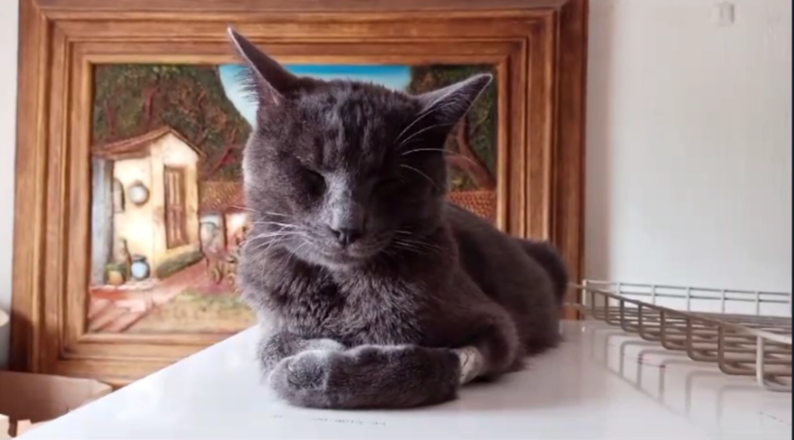
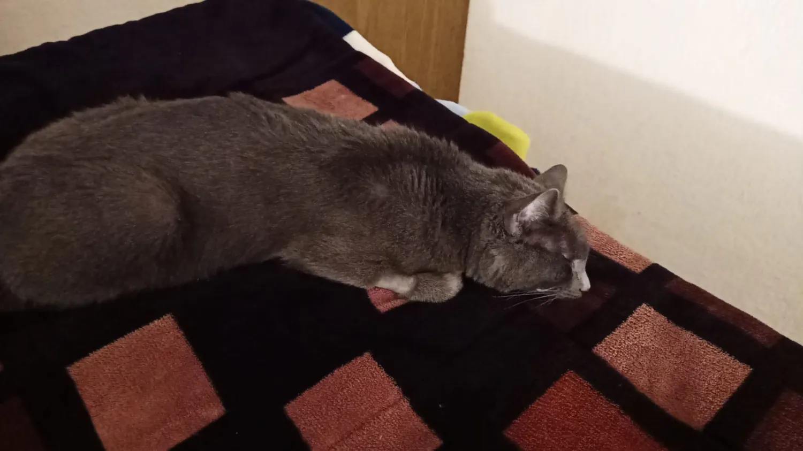
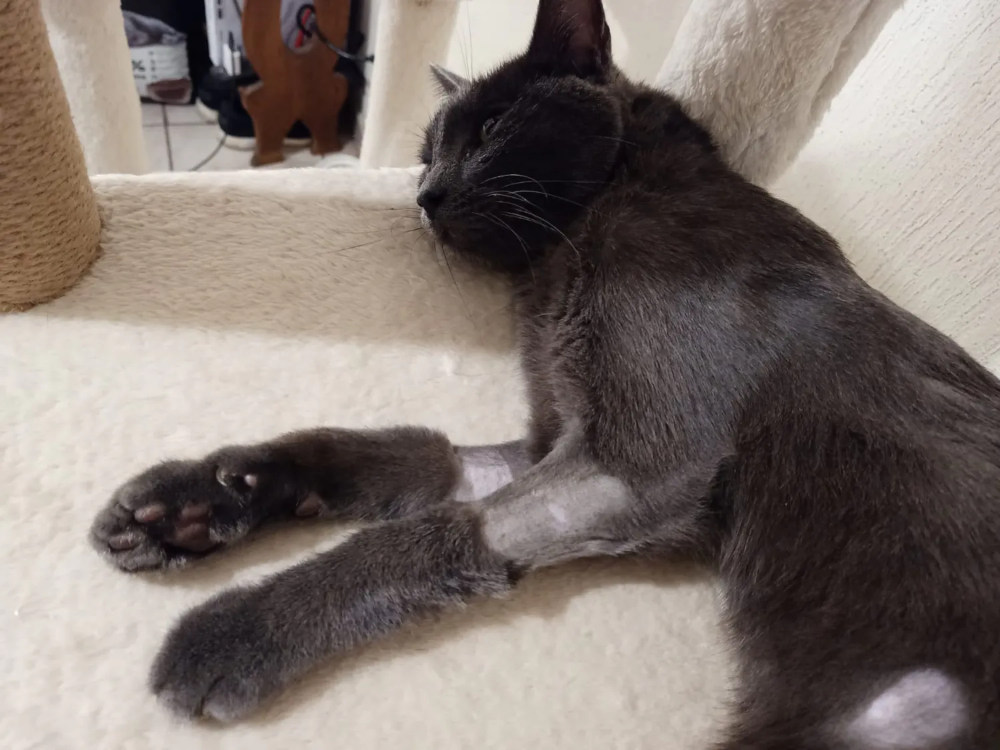
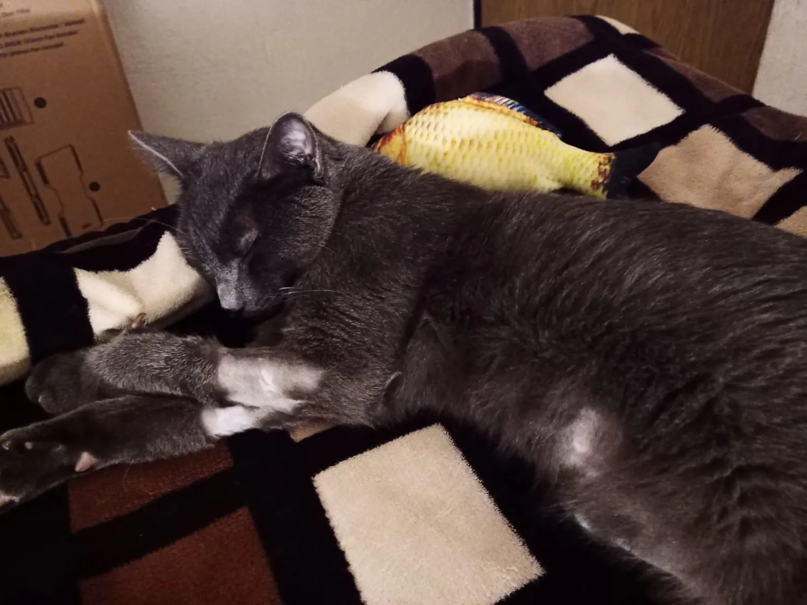
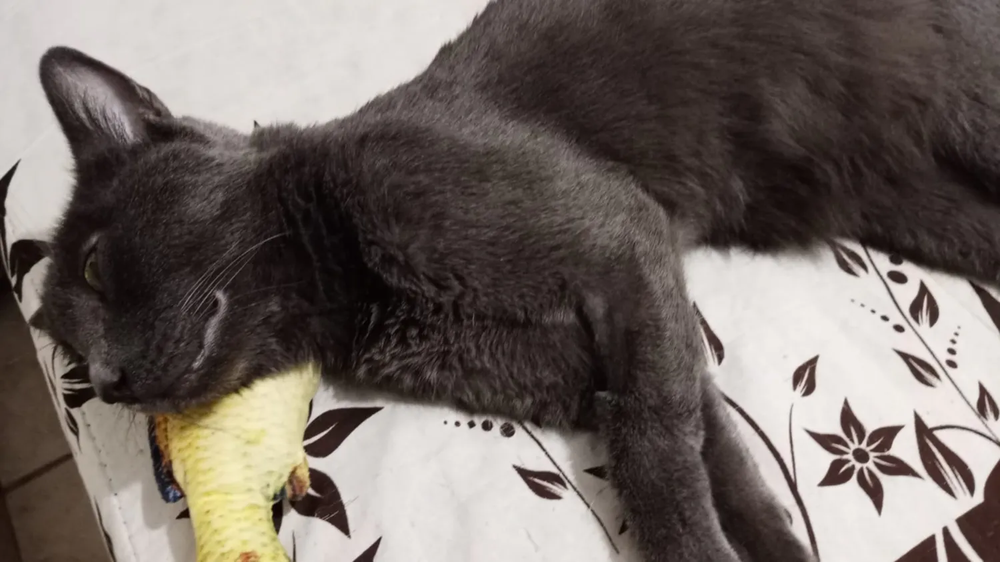
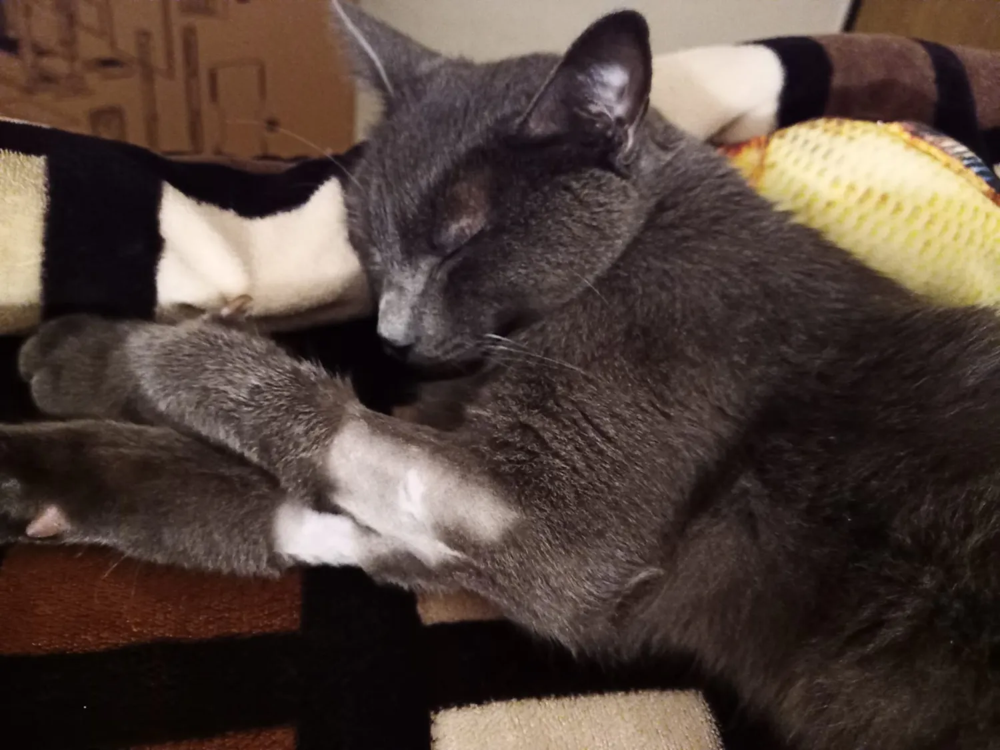

TU APOYO PUEDE SALVAR SU VIDA
Deseo conozcan un poco sobre este maravilloso gato que llegó para brindar luz, alegría y compañía a mi vida, su nombre es MAX y apenas tiene un año y medio de edad.
A MAX lo rescaté afuera de mi casa cuando huía de unos perros, eso sucedió el 1ro de abril de 2023 y él contaba con aproximadamente 4 meses de edad. En el momento que lo tuve entre mis manos supe que no lo dejaría ir, que lo cuidaría y lo protegería siempre.
MAX comenzó hace un par de meses a mostrar bajo apetito y desgano, parecía deprimido y no le apetecía jugar ni hacer todo lo que solía hacer, eso comenzó a preocuparme, pero no había más síntomas, es decir, no había diarrea o vómito. Sin embargo, con el paso de las semanas su evidente desgano determinó que me decidiera a llevarlo a consulta médica.
Después de navegar entre varios médicos veterinarios, que sólo obtuvieron mi dinero y no ayudaron en nada a mi querido MAX, pude encontrar a un buen médico que realizó los estudios necesarios para saber con suficiente certeza que la enfermedad de mi gato es Peritonitis Infecciosa Felina (PIF), un padecimiento que no es muy común en gatos de casa y que, a día de hoy, es letal.
Desafortunadamente mi condición económica no es estable, y a mi edad ya no resulto interesante para empresas que buscan gente joven, por lo que trabajo como "freelancer", pero en México, eso no siempre da buenos réditos, a veces hay dinero y a veces simplemente no. Gasté mis últimas reservas monetarias en los estudios y el actual tratamiento médico de MAX, pero la PIF, al ser incurable, sólo puede ser tratada de forma paliativa, no curativa.
Investigando arduamente a través de internet sobre esta letal y lamentable enfermedad felina, pude encontrar información sobre 2 nuevos tratamientos con alto grado de efectividad que han salvado, a día de hoy, miles de vidas de gatos con este padecimiento, se trata de tratamientos con el uso de Remdesivir y GS-441524. Esos tratamientos son experimentales y no se proporcionan en México, con esfuerzo y dinero pueden conseguirse desde el extranjero y son tratamientos largos y nada amables con el bolsillo.
La vida de MAX pende de un hilo dada la agresividad de esta enfermedad felina y mis condiciones monetarias hacen imposible que en este momento yo pueda otorgarle todas las posibilidades de tratamiento que puedan hacer una diferencia y salvar su vida.
Es por ello que, en mi frustración y con el alma en la mano, abro esta publicación de financiación para invitar a todas esas personas de gran corazón y amantes de los animales y de todas aquellas que han pasado por algo similar a brindarme su apoyo para ser capaz de suministrarle a MAX el tratamiento y todos los derivados médicos que de ello surjan.
Sin más me despido agradeciendo de antemano su atención y su genuina generosidad para mi querido compañero felino.